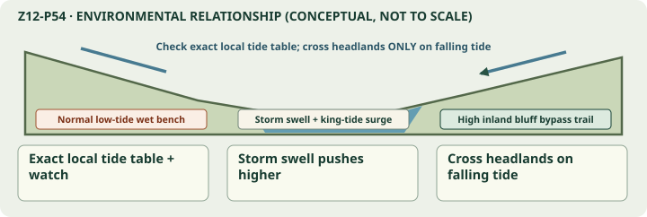

Z12-P54 · Extreme environments · New manuscript
Check local tide tables and king-tide surges before entering beaches or headlands
Plan coastal walks around exact local high/low tide timing and wind-driven storm surges.
When it applies · Ocean beaches, rocky headlands, tidal flats, sea-stack coves and coastal trails.
Equipment · Current local NOAA tide table for the exact beach/date, watch and marine weather forecast.

Actions
- Check exact local low-tide and high-tide times AND heights before stepping onto any narrow beach or rocky point—tides vary dramatically between neap tides and extreme "king tides," and timing shifts roughly 50 minutes later each day.[X15]
- Add generous safety margin for wind-driven storm surge, heavy ocean swell and onshore gales, which push breaking waves far higher up the beach than calm tide charts predict.[X15, X06, X17]
- Time headland crossings on an OUTGOING (falling) tide well before the low window—never start a narrow cliff-base stretch on a fast-rising incoming tide.[X15, ED]
Failure recognition · Consulting a tide chart for a bay 60 miles away or ignoring heavy storm swell pushing waist-high surf over a rocky point two hours before printed high tide.[X15, X06]
Verify · State exact local high-tide time, swell height and the latest clock time you must clear every narrow coastal headland.[X15, X06, ED]
Stop or change course · Rising incoming tides, heavy storm surf or missing local tide data stops headland travel—use the high inland bluff trail instead.[X15, X06]
Evidence and editorial notes
- X06 · NOAA NWS · Marine Weather Services (current web edition)
- Section: Marine Weather Services > Small Craft Advisories, Gale Warnings and Sea State · Conditions: Coastal, Great Lakes and open-water marine zones
Support: Marine forecasts issue Small Craft Advisories, Gale, Storm and Hazardous Seas Warnings; wind opposing tide or shallow shoals steepens breaking waves dramatically faster than inland forecasts indicate.
Limitations: Local fetch and headland funneling can exceed regional zone forecasts. · Conflicting evidence: None; integrates with NOAA-NWR marine channels.
Editorial note: Guides marine weather thresholds and coastal-craft abort cards in Z12. · Specialist reviewer: Marine meteorology and maritime safety
Primary source · checked 2026-11-24 - X15 · NOAA NOS · Tides and Water Levels Education Tutorial (current web edition)
- Section: Tides and Water Levels > Tidal Range, Cutoffs and Currents · Conditions: Ocean coastlines, sea caves, tidal flats and rocky headlands
Support: Tidal cycles raise water levels rapidly along shallow flats, narrow coves and rocky headlands, trapping hikers against cliffs and generating strong reversing currents in inlets; verify local tide tables before entering coastal routes.
Limitations: Wind-driven storm surge and king tides push water well above normal predicted high-tide marks. · Conflicting evidence: None; pairs with NOAA-COAST.
Editorial note: Grounds tidal-cutoff, headland and mudflat planning cards in Z12. · Specialist reviewer: Coastal navigation and marine safety
Primary source · checked 2026-11-24 - X17 · NWS · Hurricane Safety (current web edition)
- Section: Hurricane Safety > Storm Surge, Coastal Flooding and Inland Wind · Conditions: Tropical storms and hurricanes impacting coastal and near-coastal zones
Support: Storm surge and inland rainfall flooding are the deadliest hurricane hazards; obey coastal evacuation orders early, never shelter in low coastal zones or boats and treat calm storm eyes as temporary pauses before violent winds reverse.
Limitations: Hazardous rip currents and swell arrive hundreds of miles ahead of landfall. · Conflicting evidence: None; aligns with READY-EVAC and T13.
Editorial note: Grounds coastal storm-surge and hurricane evacuation cards in Z12. · Specialist reviewer: Emergency management and marine meteorology
Primary source · checked 2026-11-24
Source lineage · NOAA tides and coastal hazards; new manuscript · Classification · New manuscript.